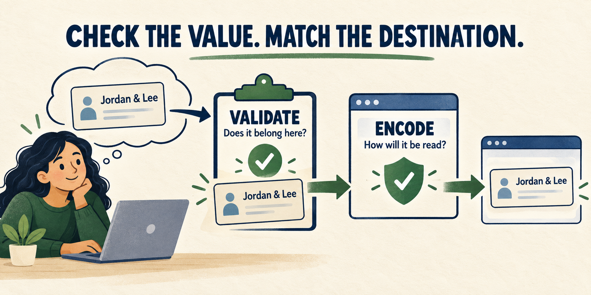
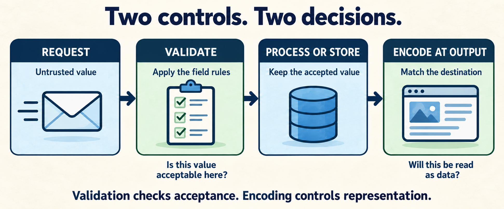
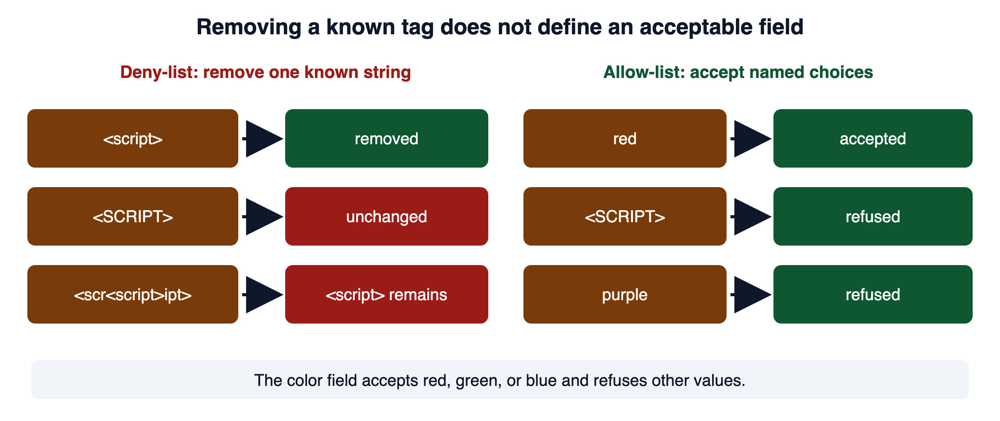
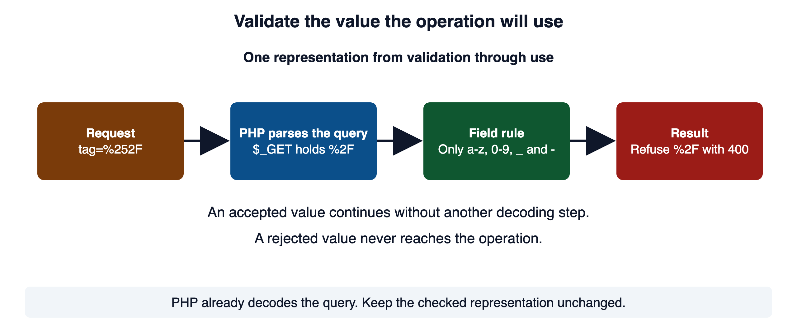
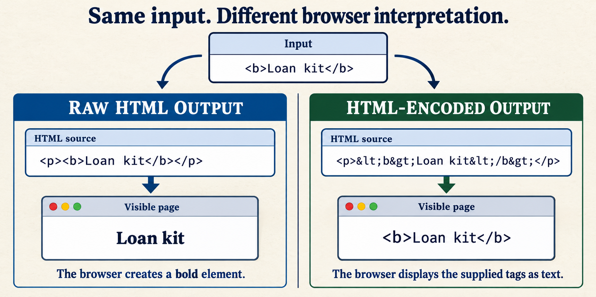
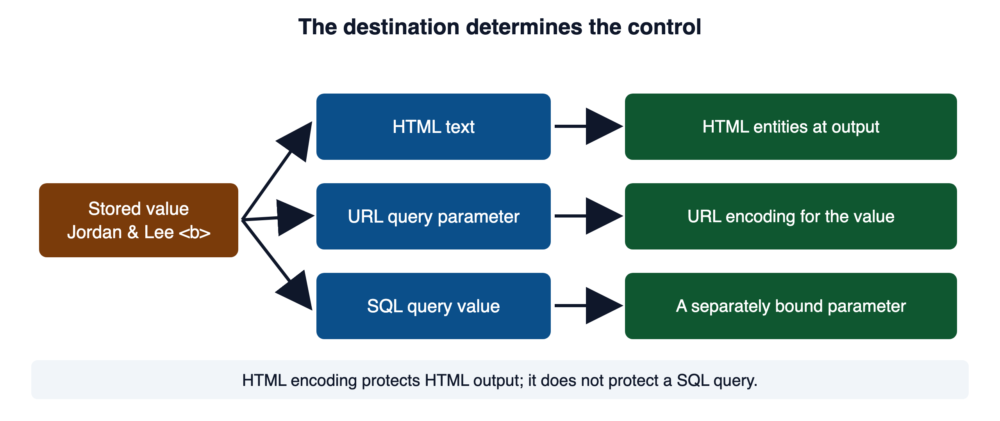
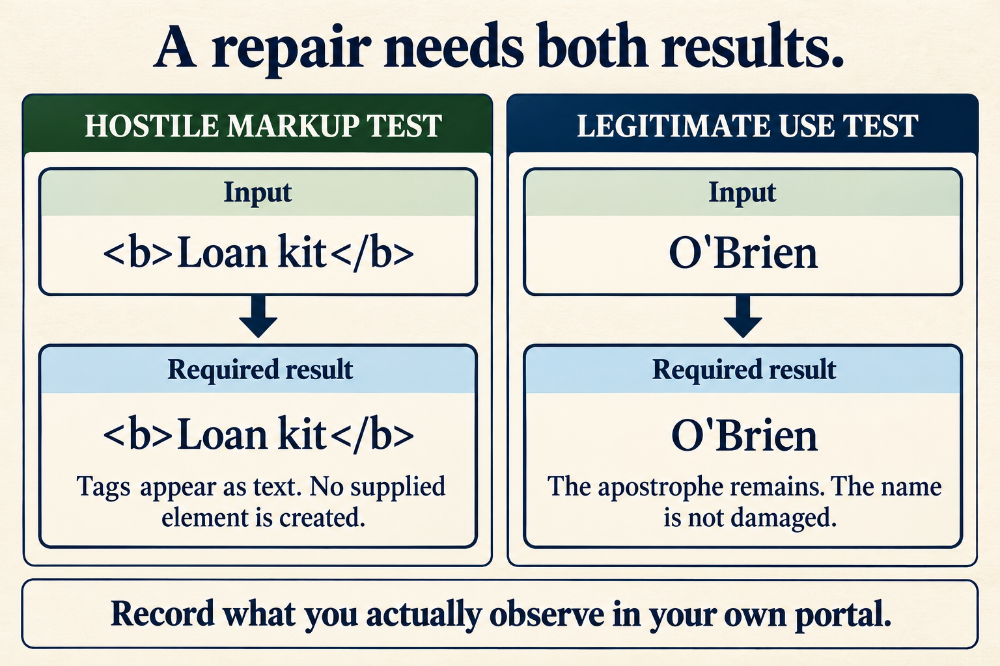

A customer enters the name Jordan & Lee. The application accepts it, stores it, and later displays it on a page. At each step, the name should remain meaningful data. Accepting the name and displaying it safely require two different controls: input validation and output encoding.
Check the value. Match the destination. Validation asks whether the value meets the field's rules. Output encoding writes it for the interpreter that will read it. A value can pass validation and still need encoding when it reaches the page.

What should happen to the ampersand in that name? The application should preserve it. When it displays the name in HTML, it writes Jordan & Lee; the browser shows Jordan & Lee. The stored name, the HTML source, and the visible page are different representations of the same meaningful data.
Now consider <b>Loan kit</b>. If a free-text field permits these characters, accepting them does not grant permission to create HTML elements. Encoding at the HTML output keeps the brackets visible as text. A field with tighter business rules may reject that input instead. The field determines acceptance; the destination determines the output control.
Why this matters to your work
A fix can block hostile markup and still damage legitimate names, quotes, or punctuation. Your evidence needs both results: the unwanted interpretation stops, and ordinary use still works. You will practice tracing the value, choosing the control, and proving what changed.
Before sending a test request, apply the course's Rules Of Engagement. Work in your own authorized portal copy and use the permitted manual methods. ROE precedes testing, including tests of a repair, because permission covers the target and method, and the activity can affect other people and their information.
Open your course environment as you work through the examples so you can compare the explanation with actual behavior. Code blocks labeled Vulnerable show the flaw; blocks labeled Secure show a repair pattern. If you use AI to propose a change, ask it to explain both decisions, then verify the results in your own copy. Generated code and predicted results can be wrong; your tests establish what the change actually does.
1Required reading
These two are required reading for the module. This page teaches everything the assignment and the quiz need; the readings give the same material in the industry's own words, which is what a scanner finding, a CVE advisory, or a bug report will use.
- OWASP Top 10:2025 A05 Injection. The risk category that unvalidated input and unencoded output belong to, with the weaknesses mapped to it.
- OWASP Input Validation Cheat Sheet. The operative reference for this module. It says plainly that validation supports the injection defenses and does not replace them.
2Where this module starts
Module 01 gave you three words and one idea. A source is where untrusted data enters your program. A sink is the operation that hands data to another interpreter, such as echo into a page or a database query. Injection is what happens when data reaches an interpreter that reads part of it as a command. This module is about the two controls that sit on that path, one at each end.
In PHP, the sources you expect are the request superglobals.
<?php
$_GET; // the query string
$_POST; // the request body
$_COOKIE; // values you handed out and no longer control
$_FILES; // a client-supplied filename, type, and size
$_SERVER['HTTP_USER_AGENT']; // any HTTP_* entry is a header the client set
file_get_contents('php://input'); // the raw body, for JSON and other formats
The word "sanitize" hides both jobs behind one verb. When someone says a value was sanitized, you cannot tell which check ran or which interpreter the output was written for. Say which one you did.
MDN: Website security describes the same attacks from the browser's side. It uses the one word "sanitization" for the two jobs named above.
3Validation answers a business question
Validation asks whether a value is acceptable for this field in this workflow. Failing to ask is improper input validation (CWE-20), and it sits under a large share of the weaknesses this course covers.
Three different checks hide under the one word "validation."
| Check | The question it answers | A value that passes the row above and fails this one |
|---|---|---|
| Syntactic | Is the value shaped correctly? | 2026-02-31 is a well-formed date string |
| Semantic | Does the value make sense here? | a delivery date that is already in the past |
| Authorization | May this person use this value? | account 47 is a valid number that belongs to someone else |
Each row is a defect that survives the row above it. A review that stops at "we validate the input" has usually checked only the first row. The OWASP cheat sheet draws the same line: validate both syntax, the expected type and format, and semantics, whether the value makes sense for the operation. The third row is authorization, which is its own control and is out of scope for this module.
Here is a syntactic check followed by a semantic one, on a quantity field.
<?php
// WHY: Strict failure checks distinguish missing or invalid input from integers; the separate range check enforces the allowed quantity.
$quantity = filter_input(INPUT_POST, 'quantity', FILTER_VALIDATE_INT);
// Syntactic: is it an integer at all?
if ($quantity === false || $quantity === null) {
http_response_code(400);
exit('Invalid quantity');
}
// Semantic: is it a quantity this business accepts?
if ($quantity < 1 || $quantity > 25) {
http_response_code(400);
exit('Quantity must be between 1 and 25');
}Secure. Why: Strict failure checks distinguish missing or invalid input from integers; the separate range check enforces the allowed quantity.
The strict comparisons distinguish the integer zero from the failure values.
Reject an invalid security-sensitive value with a short message that gives nothing away. Do not try to repair it. A repaired value is a value you invented, and now two systems disagree about what the user sent.
PHP Manual: filter_input documents the three return values exactly as the example uses them. W3Schools: PHP filter_input has a live editor if you want to try the calls.
4Prefer allow-lists over deny-lists
The tempting way to constrain a text field is to strip the characters you fear.
<?php
// WHY: Removing one known tag misses variants and does not check the permitted colors.
$color = $_POST['color'] ?? '';
$color = str_replace('<script>', '', $color);Vulnerable. Why: Removing one known tag misses variants and does not check the permitted colors.
This is a deny-list: a list of what is forbidden. It is only as complete as the author's imagination on the day they wrote it. The attacker picks a form the author did not list.

Removing the exact string <script> leaves <SCRIPT> unchanged. One pass over <scr<script>ipt> removes the inner tag and leaves <script> behind. None of those operations establishes that the submitted color is red, green, or blue.
When the field is a fixed set, state the set and reject anything outside it.
<?php
// WHY: The type check and strict membership test accept only the listed color strings without loose type conversion.
$allowedColors = ['red', 'green', 'blue'];
$color = $_POST['color'] ?? null;
// Establish a string before checking membership in the permitted set.
if (!is_string($color) || !in_array($color, $allowedColors, true)) {
http_response_code(400);
exit('Invalid color');
}Secure. Why: The type check and strict membership test accept only the listed color strings without loose type conversion.
The third argument to in_array is the strict flag. Without it, PHP compares loosely, and section 8 shows what loose comparison does to a security check.
When the field is free text, the character set is still an allow-list. Fix the type, trim, bound the length, and require the value to match a pattern of permitted characters.
<?php
// WHY: The type, character-count, and whole-value pattern checks enforce the username rules on the normalized value.
$username = $_POST['username'] ?? null;
if (!is_string($username)) {
http_response_code(400);
exit('Invalid username');
}
$username = trim($username);
if (mb_strlen($username, 'UTF-8') < 3 || mb_strlen($username, 'UTF-8') > 20) {
http_response_code(400);
exit('Username must be 3 to 20 characters');
}
if (preg_match('/\A[a-z0-9_]+\z/', $username) !== 1) {
http_response_code(400);
exit('Username may use lowercase letters, digits, and underscore');
}Secure. Why: The type, character-count, and whole-value pattern checks enforce the username rules on the normalized value.
mb_strlen counts characters, where strlen counts bytes. An accented letter such as é occupies more than one UTF-8 byte. A byte limit and a character limit therefore accept different strings. Name the encoding explicitly when using mb_strlen.
OWASP Input Validation Cheat Sheet, allow-list guidance is the source for this section. PHP Manual: preg_match and PHP Manual: mb_strlen document the two functions.
5Normalize before you validate
A check must run on the value the operation will actually use. If one layer checks a value and another decodes it again, those layers can see different characters.
<?php
// WHY: Repeated decoding can change a previously checked value: %2F becomes /. Validation must check the representation that will be used.
$value = $_GET['tag'] ?? '';
while ($value !== urldecode($value)) {
$value = urldecode($value);
}Vulnerable. Why: Repeated decoding can change a previously checked value: %2F becomes /. Validation must check the representation that will be used.
An equipment tag permits lowercase ASCII letters, digits, underscore, and hyphen. This workflow needs no further decoding after PHP parses the request.
<?php
// WHY: The rule checks the value PHP already parsed and rejects every character outside the permitted tag pattern; there is no extra decoding step.
$tag = $_GET['tag'] ?? null;
if (!is_string($tag) || strlen($tag) > 30
|| preg_match('/\A[a-z0-9_-]+\z/', $tag) !== 1) {
http_response_code(400);
exit('Invalid tag');
}Secure. Why: The rule checks the value PHP already parsed and rejects every character outside the permitted tag pattern; there is no extra decoding step.
Parsed value: kit_12 -> field check passes
Parsed value: %2F -> 400 Invalid tag
Parsed value: / -> 400 Invalid tagThe allowed pattern decides both rejections. No downstream layer changes the accepted value into a new one.

The request is parsed, its value is checked, and the operation uses that same value. Additional decoding is not part of this field's contract.
PHP Manual: urldecode warns that $_GET and $_REQUEST are already decoded. The required input-validation reading explains why the checked representation must match the representation used downstream.
6Output encoding answers an interpreter question
Validation decided the value was acceptable. It said nothing about how the value must be written where it is about to land. That is the encoding question, and getting it wrong is improper encoding or escaping of output (CWE-116).
Here is a value written straight into a page. Assume it holds <script>alert(document.cookie)</script>.
<?php
// WHY: The value is inserted as raw HTML, so supplied tags can create elements or scripts instead of displaying as text.
$displayName = $_GET['name'] ?? '';
echo '<p>Welcome back, ' . $displayName . '</p>';Vulnerable. Why: The value is inserted as raw HTML, so supplied tags can create elements or scripts instead of displaying as text.
<p>Welcome back, <script>alert(document.cookie)</script></p>The browser reads that response as HTML. The angle brackets open a real <script> element, and the browser runs what is inside. Nothing checked the value at the moment it was written, so the value chose the markup.

<?php
// WHY: HTML encoding writes special characters as entities, allowing the browser to display the accepted value as text.
$displayName = $_GET['name'] ?? '';
echo '<p>Welcome back, ' . htmlspecialchars(
$displayName,
ENT_QUOTES | ENT_SUBSTITUTE, // encode both quote styles; replace invalid bytes
'UTF-8' // never rely on the default charset
) . '</p>';Secure. Why: HTML encoding writes special characters as entities, allowing the browser to display the accepted value as text.
<p>Welcome back, <script>alert(document.cookie)</script></p>All three arguments matter, and the manual is the source for each.
ENT_QUOTESencodes the single quote as well as the double quote. That is what makes the output safe inside a single-quoted attribute.ENT_SUBSTITUTEreplaces a malformed byte sequence with the Unicode replacement character. Without it, the manual says the function returns an empty string for a string with an invalid code unit sequence, which silently blanks the value.'UTF-8'names the character set. Left out, the function uses thedefault_charsetsetting of whatever server runs the code.
That pattern is correct for HTML text and for a quoted HTML attribute. It is not automatically correct for a URL, for JavaScript, or for a SQL query, because each of those is a different interpreter with a different grammar.

A URL that goes into an HTML attribute crosses two interpreters, so it needs the encoding for each, in the order the interpreters will see them: URL-encode the parameter value first, then HTML-encode the finished URL for the attribute. The OWASP cheat sheet gives the same order.
<?php
// WHY: The query builder encodes the query values; HTML encoding then protects the complete URL inside its quoted attribute.
$query = http_build_query(['topic' => $topic]); // percent-encodes the value
$url = '/threads.php?' . $query;
echo '<a href="' . htmlspecialchars($url, ENT_QUOTES | ENT_SUBSTITUTE, 'UTF-8') . '">Open thread</a>';Secure. Why: The query builder encodes the query values; HTML encoding then protects the complete URL inside its quoted attribute.
When data must cross into JavaScript, serialize it instead of building code from it. Serialize it with json_encode and the hardening flags, and put it where the page reads it as data.
<?php
// WHY: JSON serialization preserves data structure; the HEX flags prevent supplied characters from terminating the HTML script element.
$payload = json_encode(
['name' => $displayName],
JSON_HEX_TAG | JSON_HEX_AMP | JSON_HEX_APOS | JSON_HEX_QUOT | JSON_THROW_ON_ERROR
);
?>
<script type="application/json" id="app-data"><?= $payload ?></script>Secure. Why: JSON serialization preserves data structure; the HEX flags prevent supplied characters from terminating the HTML script element.
For a SQL query no HTML function helps at all. SQL values travel as bound parameters, which is out of scope for this module, and the destination diagram shows the distinction.
PHP Manual: htmlspecialchars documents the flags, the empty-string behavior, and the 8.1 default. OWASP Cross Site Scripting Prevention Cheat Sheet is the context-by-context guide. PHP Manual: JSON constants defines each JSON_HEX_* flag.
7Finding every sink on a page
A change that protects one output expression leaves the others to review. Trace each expression before editing.
Read the output statements and identify what surrounds each variable. The surrounding HTML determines whether the value becomes text, an attribute, or another context, which determines the control:
| Where the value lands | Interpreter | Encoding |
|---|---|---|
| It lands between tags, as text | HTML text | htmlspecialchars |
| It lands inside a quoted attribute | HTML attribute | htmlspecialchars with ENT_QUOTES; keep the quotes around the attribute |
| It lands in a URL inside an attribute | URL, then HTML attribute | urlencode or http_build_query, then htmlspecialchars |
It lands inside a <script> block | JavaScript | json_encode with the JSON_HEX_* flags, in a data block |
The same value usually lands in more than one of these on the same page: once in a heading, once echoed back into the search box, once in a link. Each landing is a sink of its own. Keep attributes quoted. Unquoted values have additional delimiters, so the quoted-attribute encoding pattern does not apply to them. For a complete URL supplied by a requester, also validate the allowed scheme and destination; HTML encoding does not make a javascript: URL acceptable. The section 6 example constructs a local path and encodes only its query values.
MDN: Introduction to HTML explains how the HTML parser reads tags, attributes, and entities, which is what the first two rows depend on.
8PHP type confusion
POST /order.php
quantity[]=1&quantity[]=2With that body, $_POST['quantity'] is an array, not a string. Code that assumed a string now hands an array to a string function. Depending on the PHP version and the function, that is a warning, a fatal error, or a comparison that quietly gives the wrong answer. Establish the type before you rely on it.
<?php
// WHY: The string check rejects array-shaped or missing input before a string operation can raise a type error.
$name = $_POST['display_name'] ?? null;
if (!is_string($name)) {
http_response_code(400);
exit('Invalid display name');
}Secure. Why: The string check rejects array-shaped or missing input before a string operation can raise a type error.
The other trap is a loose comparison in a decision that must be exact.
<?php
// WHY: Loose equality can accept a different numeric-looking string: "10" and "1e1" compare equal even though they are not the same token.
$token = $_GET['token'] ?? '';
if ($token == $expected) {
grant_access();
}Vulnerable. Why: Loose equality can accept a different numeric-looking string: "10" and "1e1" compare equal even though they are not the same token.
<?php
// WHY: The submitted value must be a string, and hash_equals compares it with the known secret without numeric-string coercion.
$token = $_GET['token'] ?? '';
if (is_string($token) && hash_equals($expected, $token)) {
grant_access();
}Secure. Why: The submitted value must be a string, and hash_equals compares it with the known secret without numeric-string coercion.
hash_equals avoids a comparison that stops at the first unequal character. Check that the submitted value is a string, and pass the expected secret as the first argument. A length mismatch returns false immediately, so the function does not conceal the length of the expected value.
PHP Manual: Comparison operators has the conversion table and the PHP 8 examples quoted above. PHP Manual: hash_equals documents the function.
9Validation and encoding are both necessary
A shipping label accepts a display name under the field rules. That accepted value may still include characters with meaning in HTML:
Jordan & LeeThe value is valid, and it contains &, which has meaning in HTML. Validation should accept it, because the business accepts it. Encoding then writes it safely at the point it is used, as Jordan & Lee. Neither control could have done the other's job. Rejecting the ampersand would have broken a real name. Encoding without validation would happily store a 4,000-character name that fails no output rule at all.
The reverse also holds. Encoding account 47 makes it safe to write into a page. It says nothing about whether the current user may see account 47. That is the third row of the table in section 3, and it is a separate decision.
The OWASP Input Validation Cheat Sheet states the same division: use parameterized queries for SQL and context-aware output encoding to prevent cross-site scripting, and removing suspicious characters can change meaning and still does not provide either.
10How you prove the control works

The markup case must display as text. The legitimate case must retain its apostrophe or accented letter. Either result alone leaves a gap in the proof.
Test a validation rule at its boundaries before claiming it works. Boundary cases reveal incorrect comparisons, while missing and wrong-type values reveal assumptions about the request. Choose the applicable cases below for each rule.
| Case | What it catches |
|---|---|
| the smallest valid value | an off-by-one that rejects legitimate input |
| the largest valid value | the same fault at the other end |
| one below the smallest, one above the largest | the boundary logic itself |
| the field missing entirely | the null versus false confusion from section 3 |
| the wrong type, including an array | the type confusion from section 8 |
| expected Unicode and punctuation | a rule that quietly rejects real names |
| an alternate encoding of a rejected value | normalization that ran in the wrong order |
| a value crafted for the actual sink | whether the encoding at the far end holds |
For output encoding, run both tests below and keep both results. The markup test checks interpretation; the legitimate-use test checks that the fix preserves accepted data.
- Hostile markup arrives inert. A value such as
<b>Test</b>appears on screen as those literal characters, not as bold text. - A legitimate special character still displays. A name with an apostrophe or an accent shows correctly.
OWASP Web Security Testing Guide: Testing for Reflected Cross Site Scripting explains how to investigate reflected output and its interpretation. Pair the security probe with legitimate-use checks to verify that your change preserves the field's intended behavior.
11Common misconceptions
12Check your understanding
Try these questions before reading the answers. Explaining the decision yourself reveals gaps that rereading a completed explanation can hide.
- State the question validation answers and the question encoding answers, and say why neither can replace the other.
- Where in the flow does validation run, and where does encoding run?
- What decides which encoding a value needs at a given sink?
- Give an allow-list rule and a deny-list rule for a color field. Which defines the complete accepted set, and why does either rule still need an output control?
- Why must you normalize before you validate? Give an input that gets through if you reverse the order.
- Which of the three checks in section 3 decides whether a user may act on a valid record ID?
- A request arrives as
quantity[]=1&quantity[]=2. What does$_POST['quantity']hold, and what should the code check first? - Why can
==accept a different numeric-looking token string, and what checks should replace that comparison? - In an HTML text context, what two outcomes must an encoding test show, and what does it mean if only the first passes?
- What do the explicit flags and encoding in the lecture's
htmlspecialcharscall establish?
Compare your reasoning
- validation asks whether the value is acceptable to the business; encoding asks how the destination must read the value; one decides acceptability on the way in and the other decides representation on the way out.
- validation on the way in, encoding on the way out, at each sink.
- the interpreter about to read the output, not the value or the field it came from.
- an allow-list accepts only
red,green, orblue; a deny-list removes a known string such as<script>. The allow-list defines the accepted set. Both still need the control appropriate to the output destination. - validate the representation the operation uses; PHP parses
tag=%252Finto%2F, and another decode would change that checked value into/. - authorization.
- an array, so the code checks
is_stringbefore using it as a string. - loose equality can compare numeric-looking strings as numbers, so
"10" == "1e1"is true; use===,in_array(..., true), orhash_equals. - hostile markup renders as literal text and a legitimate special character still displays; passing only the first suggests the code strips characters instead of encoding them.
ENT_QUOTEScovers the single quote,ENT_SUBSTITUTEstops an invalid byte sequence from returning an empty string, and'UTF-8'keeps the result from depending on a server setting.
13References and further study
The two required readings in section 1 and the manual pages linked through the lecture are the main references. Each entry below names what it confirms.
- CWE-20: Improper Input Validationcwe.mitre.org
The formal entry behind section 3. When a finding says CWE-20, this is what it means.
- CWE-116: Improper Encoding or Escaping of Outputcwe.mitre.org
The formal entry behind section 6.
- PHP Manual: Validate filtersphp.net
The catalog of
FILTER_VALIDATE_*constants and their options, including ranges, behind section 3. - PHP Manual: json_encodephp.net
The function in section 6, with the flags parameter the data-block pattern uses.
- PHP Manual: in_arrayphp.net
Confirms that the third argument turns on strict comparison, which section 4 relies on.
- OWASP Mass Assignment Cheat Sheetcheatsheetseries.owasp.org
The allow-list idea applied to whole objects: what happens when a request may name fields the developer never offered.
- W3Schools: PHP Form Validationw3schools.com
A live editor for server-side form checks, an independent walk-through of the pattern in section 4.
Videos.